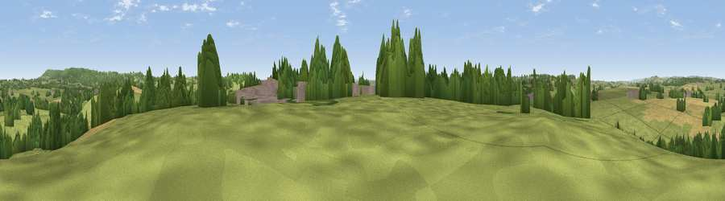

Windmill Hill
#31651 in England · top 67% of its area beats it · near WincantonThe view, rendered

A 360° render of this exact spot computed from the terrain model, tree cover and land cover — summer colours, afternoon light, calibrated against photographs of famous viewpoints. Real trees, hedges and buildings will differ in detail.
The panorama
Grey silhouette: terrain skyline in each direction (720 bearings, Earth curvature and refraction included). Dashed green: skyline with trees (+15 m) and buildings (+8 m) as obstacles. Blue strip: how far the ground is visible on each bearing.
Where the view opens
Wedge length = distance to the farthest visible ground on that bearing (vegetation-aware). Rings at 10, 25 and 50 km.
What fills the view
61% grassland · 19% woodland · 18% cropland · 2% built-up
Angular shares of the visible panorama (visual magnitude), not map area. Landscape diversity 0.44 (0–1 Shannon).
Key numbers
More beautiful places nearby
The staircase of upgrades: each row has a higher view potential than everything closer. Driving times are estimates from straight-line distance, calibrated against real road routing — check an actual route before setting out.
| Place | Direction | Drive | Score |
|---|---|---|---|
| Viewpoint near Stoke Trister | ESE · 2 km | ~5 min | 56.4 |
| Viewpoint near Penselwood | ENE · 4 km | ~10 min | 62.9 |
| Bratton Hill | W · 5 km | ~10 min | 68.0 |
| Viewpoint near South Brewham | NNE · 7 km | ~15 min | 69.5 |
| Viewpoint near Lamyatt | NW · 9 km | ~17 min | 77.8 |
| Viewpoint near Berwick St John | ESE · 22 km | ~37 min | 78.2 |
| Viewpoint near Hewish | WSW · 36 km | ~55 min | 78.5 |
| Beacon Batch | NW · 37 km | ~55 min | 79.4 |
51.05987, -2.40341 · source: dobih hill · position refined by local search. Computed location — check access rights before visiting.